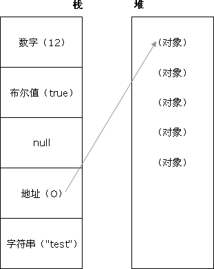

This article collects and summarizes some front-end interview questions. Beginners should also study the underlying principles carefully after reading. Important knowledge needs to be learned systematically and thoroughly, forming your own knowledge chain. Do not take shortcuts or rely on luck — cramming just to pass an interview is wrong! And it’s impossible! Impossible! Impossible!
Front-end is still a young industry. New industry standards, frameworks, and libraries are constantly being updated and added. As Hermen said in his "Front-end Service-oriented Path" keynote at the 2015 Shenzhen JS Conference: "Every 18 to 24 months, front-end becomes twice as hard." These changes make front-end capabilities richer and the applications we create more perfect. Therefore, paying attention to various front-end technologies and keeping up with the rapid pace of change is also one of the essential skills for a front-end programmer.
Recently, I have also received many private messages on Weibo with encouragement and corrections to the questions. I will often update the questions and answers toGitHub blogI hope front-end developers can both use and express, and have their own understanding of theoretical knowledge. You can learn the knowledge points below one by one to advance and form your own professional skill chain.
There are a few points to note about interviews: (SourceWinterTeacher, github:@wintercn)
Interview questions: Depending on your level and position, from entry-level to expert, both breadth and depth will increase.
Question types: theoretical knowledge, algorithms, project details, technical vision, open-ended questions, work cases.
Detailed follow-up: Can ensure that they keep asking until you start not understanding or the interviewer starts not understanding, which greatly extends the question's discrimination and depth and reveals your actual ability. Because this kind of knowledge connection comes from long-term learning, cramming at the last minute absolutely will not help you remember it.
No matter how well you answer questions, the interviewer (who may be the direct supervisor of the position you are interviewing for) will consider: Do I want this person as my colleague? So attitude is very important. Besides being able to do things, you also need to know how to deal with people. (Feels more like a blind date ( •̣̣̣̣̣̥́௰•̣̣̣̣̣̥̀ ))
A senior front-end developer who confuses absolute and relative — such a person is not needed, because what the team needs is: you are someone with reliable skills (dependable).
Front-end development knowledge points:
HTML&CSS：
对Web标准的理解、浏览器内核差异、兼容性、hack、CSS基本功：布局、盒子模型、选择器优先级、
HTML5、CSS3、Flexbox
JavaScript：
数据类型、运算、对象、Function、继承、闭包、作用域、原型链、事件、RegExp、JSON、Ajax、
DOM、BOM、内存泄漏、跨域、异步装载、模板引擎、前端MVC、路由、模块化、Canvas、ECMAScript 6、Nodejs
其他：
移动端、响应式、自动化构建、HTTP、离线存储、WEB安全、优化、重构、团队协作、可维护、易用性、SEO、UED、架构、职业生涯、快速学习能力
As a front-end engineer,knowledge points you should master regardless of how many years you have worked：
This article was published by Wang Zimo onThe Engineer's Laboratory
1、DOM结构 —— 两个节点之间可能存在哪些关系以及如何在节点之间任意移动。
2、DOM操作 —— 如何添加、移除、移动、复制、创建和查找节点等。
3、事件 —— 如何使用事件，以及IE和标准DOM事件模型之间存在的差别。
4、XMLHttpRequest —— 这是什么、怎样完整地执行一次GET请求、怎样检测错误。
5、严格模式与混杂模式 —— 如何触发这两种模式，区分它们有何意义。
6、盒模型 —— 外边距、内边距和边框之间的关系，及IE8以下版本的浏览器中的盒模型
7、块级元素与行内元素 —— 怎么用CSS控制它们、以及如何合理的使用它们
8、浮动元素 —— 怎么使用它们、它们有什么问题以及怎么解决这些问题。
9、HTML与XHTML —— 二者有什么区别，你觉得应该使用哪一个并说出理由。
10、JSON —— 作用、用途、设计结构。
Notes:
根据自己需要选择性阅读，面试题是对理论知识的总结，让自己学会应该如何表达。 资料答案不够正确和全面，欢迎欢迎Star和提交issues。 格式不断修改更新中。 更新记录： 2016年3月25日：新增ECMAScript6 相关问题
Updated: 2016-3-25
HTML
What does Doctype do? What is the difference between standards mode and quirks mode?
（1）、<!DOCTYPE>声明位于位于HTML文档中的第一行，处于 <html> 标签之前。告知浏览器的解析器用什么文档标准解析这个文档。DOCTYPE不存在或格式不正确会导致文档以兼容模式呈现。 （2）、标准模式的排版 和JS运作模式都是以该浏览器支持的最高标准运行。在兼容模式中，页面以宽松的向后兼容的方式显示,模拟老式浏览器的行为以防止站点无法工作。
Why does HTML5 only need to write <!DOCTYPE HTML>?
HTML5 不基于 SGML，因此不需要对DTD进行引用，但是需要doctype来规范浏览器的行为（让浏览器按照它们应该的方式来运行）； 而HTML4.01基于SGML,所以需要对DTD进行引用，才能告知浏览器文档所使用的文档类型。
What are inline elements? What are block-level elements? What are void elements?
首先：CSS规范规定，每个元素都有display属性，确定该元素的类型，每个元素都有默认的display值，如div的display默认值为“block”，则为“块级”元素；span默认display属性值为“inline”，是“行内”元素。 （1）行内元素有：a b span img input select strong（强调的语气） （2）块级元素有：div ul ol li dl dt dd h1 h2 h3 h4…p （3）常见的空元素： <br> <hr> <img> <input> <link> <meta> 鲜为人知的是： <area> <base> <col> <command> <embed> <keygen> <param> <source> <track> <wbr>When importing styles into a page, what is the difference between using link and @import?
（1）link属于XHTML标签，除了加载CSS外，还能用于定义RSS, 定义rel连接属性等作用；而@import是CSS提供的，只能用于加载CSS; （2）页面被加载的时，link会同时被加载，而@import引用的CSS会等到页面被加载完再加载; （3）import是CSS2.1 提出的，只在IE5以上才能被识别，而link是XHTML标签，无兼容问题;
Introduce your understanding of browser rendering engines.
主要分成两部分：渲染引擎(layout engineer或Rendering Engine)和JS引擎。 渲染引擎：负责取得网页的内容（HTML、XML、图像等等）、整理讯息（例如加入CSS等），以及计算网页的显示方式，然后会输出至显示器或打印机。浏览器的内核的不同对于网页的语法解释会有不同，所以渲染的效果也不相同。所有网页浏览器、电子邮件客户端以及其它需要编辑、显示网络内容的应用程序都需要内核。 JS引擎则：解析和执行javascript来实现网页的动态效果。 最开始渲染引擎和JS引擎并没有区分的很明确，后来JS引擎越来越独立，内核就倾向于只指渲染引擎。
What are the common browser rendering engines?
Trident内核：IE,MaxThon,TT,The World,360,搜狗浏览器等。[又称MSHTML] Gecko内核：Netscape6及以上版本，FF,MozillaSuite/SeaMonkey等 Presto内核：Opera7及以上。 [Opera内核原为：Presto，现为：Blink;] Webkit内核：Safari,Chrome等。 [ Chrome的：Blink（WebKit的分支）]
Detailed article:Analysis and comparison of browser rendering engines
What new features does HTML5 have, and which elements were removed? How do you handle browser compatibility for new HTML5 tags? How do you distinguish HTML from HTML5?
* HTML5 现在已经不是 SGML 的子集，主要是关于图像，位置，存储，多任务等功能的增加。 绘画 canvas; 用于媒介回放的 video 和 audio 元素; 本地离线存储 localStorage 长期存储数据，浏览器关闭后数据不丢失; sessionStorage 的数据在浏览器关闭后自动删除; 语意化更好的内容元素，比如 article、footer、header、nav、section; 表单控件，calendar、date、time、email、url、search; 新的技术webworker, websocket, Geolocation; 移除的元素： 纯表现的元素：basefont，big，center，font, s，strike，tt，u; 对可用性产生负面影响的元素：frame，frameset，noframes； * 支持HTML5新标签： IE8/IE7/IE6支持通过document.createElement方法产生的标签， 可以利用这一特性让这些浏览器支持HTML5新标签， 浏览器支持新标签后，还需要添加标签默认的样式。 当然也可以直接使用成熟的框架、比如html5shim; <!--[if lt IE 9]> <script> src="//cdn.bootcss.com/html5shiv/r29/html5.min.js"</script> <![endif]--> * 如何区分HTML5： DOCTYPE声明\新增的结构元素\功能元素Briefly describe your understanding of HTML semantics.
用正确的标签做正确的事情。 html语义化让页面的内容结构化，结构更清晰，便于对浏览器、搜索引擎解析; 即使在没有样式CSS情况下也以一种文档格式显示，并且是容易阅读的; 搜索引擎的爬虫也依赖于HTML标记来确定上下文和各个关键字的权重，利于SEO; 使阅读源代码的人对网站更容易将网站分块，便于阅读维护理解。
How is HTML5 offline storage used? Can you explain its working principle?
在用户没有与因特网连接时，可以正常访问站点或应用，在用户与因特网连接时，更新用户机器上的缓存文件。 原理：HTML5的离线存储是基于一个新建的.appcache文件的缓存机制(不是存储技术)，通过这个文件上的解析清单离线存储资源，这些资源就会像cookie一样被存储了下来。之后当网络在处于离线状态下时，浏览器会通过被离线存储的数据进行页面展示。 如何使用： 1、页面头部像下面一样加入一个manifest的属性； 2、在cache.manifest文件的编写离线存储的资源； CACHE MANIFEST #v0.11 CACHE: js/app.js css/style.css NETWORK: resourse/logo.png FALLBACK: / /offline.html 3、在离线状态时，操作window.applicationCache进行需求实现。For detailed usage, please refer to:Interesting HTML5: Offline Storage
How does the browser manage and load HTML5 offline storage resources?
在线的情况下，浏览器发现html头部有manifest属性，它会请求manifest文件，如果是第一次访问app，那么浏览器就会根据manifest文件的内容下载相应的资源并且进行离线存储。如果已经访问过app并且资源已经离线存储了，那么浏览器就会使用离线的资源加载页面，然后浏览器会对比新的manifest文件与旧的manifest文件，如果文件没有发生改变，就不做任何操作，如果文件改变了，那么就会重新下载文件中的资源并进行离线存储。 离线的情况下，浏览器就直接使用离线存储的资源。
For detailed usage, please refer to:Interesting HTML5: Offline Storage
Please describe the differences between cookies, sessionStorage, and localStorage.
cookie是网站为了标示用户身份而储存在用户本地终端（Client Side）上的数据（通常经过加密）。 cookie数据始终在同源的http请求中携带（即使不需要），记会在浏览器和服务器间来回传递。 sessionStorage和localStorage不会自动把数据发给服务器，仅在本地保存。 存储大小： cookie数据大小不能超过4k。 sessionStorage和localStorage 虽然也有存储大小的限制，但比cookie大得多，可以达到5M或更大。 有期时间： localStorage 存储持久数据，浏览器关闭后数据不丢失除非主动删除数据； sessionStorage 数据在当前浏览器窗口关闭后自动删除。 cookie 设置的cookie过期时间之前一直有效，即使窗口或浏览器关闭What are the disadvantages of iframe?
*iframe会阻塞主页面的Onload事件； *搜索引擎的检索程序无法解读这种页面，不利于SEO; *iframe和主页面共享连接池，而浏览器对相同域的连接有限制，所以会影响页面的并行加载。 使用iframe之前需要考虑这两个缺点。如果需要使用iframe，最好是通过javascript 动态给iframe添加src属性值，这样可以绕开以上两个问题。
What is the purpose of Label? How is it used?
label标签来定义表单控制间的关系,当用户选择该标签时，浏览器会自动将焦点转到和标签相关的表单控件上。 <label for="Name">Number:</label> <input type=“text“name="Name" id="Name"/> <label>Date:<input type="text" name="B"/></label>
How do you turn off autocomplete in an HTML5 form?
给不想要提示的 form 或某个 input 设置为 autocomplete=off。
How do you implement communication between multiple tabs in a browser? (Alibaba)
WebSocket、SharedWorker； 也可以调用localstorge、cookies等本地存储方式； localstorge另一个浏览上下文里被添加、修改或删除时，它都会触发一个事件， 我们通过监听事件，控制它的值来进行页面信息通信； 注意quirks：Safari 在无痕模式下设置localstorge值时会抛出 QuotaExceededError 的异常；
How do you make WebSocket compatible with older browsers? (Alibaba)
Adobe Flash Socket 、 ActiveX HTMLFile (IE) 、 基于 multipart 编码发送 XHR 、 基于长轮询的 XHR
What are the uses of the Page Visibility API?
通过 visibilityState 的值检测页面当前是否可见，以及打开网页的时间等; 在页面被切换到其他后台进程的时候，自动暂停音乐或视频的播放；
How do you implement a circular clickable area on a page?
1、map+area或者svg 2、border-radius 3、纯js实现 需要求一个点在不在圆上简单算法、获取鼠标坐标等等
Implement drawing a 1px high line without using border, and keep a consistent effect in both standards mode and quirks mode across different browsers.
<div style="height:1px;overflow:hidden;background:red"></div>
What are CAPTCHAs for, and what security problem do they solve?
区分用户是计算机还是人的公共全自动程序。可以防止恶意破解密码、刷票、论坛灌水； 有效防止黑客对某一个特定注册用户用特定程序暴力破解方式进行不断的登陆尝试。
What are the differences between title and h1, b and strong, i and em?
title属性没有明确意义只表示是个标题，H1则表示层次明确的标题，对页面信息的抓取也有很大的影响； strong是标明重点内容，有语气加强的含义，使用阅读设备阅读网络时：<strong>会重读，而<B>是展示强调内容。 i内容展示为斜体，em表示强调的文本； Physical Style Elements -- 自然样式标签 b, i, u, s, pre Semantic Style Elements -- 语义样式标签 strong, em, ins, del, code 应该准确使用语义样式标签, 但不能滥用, 如果不能确定时首选使用自然样式标签。
CSS
Introduce the standard CSS box model. What is different about the box model in low versions of IE?
（1）有两种， IE 盒子模型、W3C 盒子模型； （2）盒模型： 内容(content)、填充(padding)、边界(margin)、 边框(border)； （3）区 别： IE的content部分把 border 和 padding计算了进去;
What are the CSS selectors? Which properties can be inherited?
* 1.id选择器（ # myid） 2.类选择器（.myclassname） 3.标签选择器（div, h1, p） 4.相邻选择器（h1 + p） 5.子选择器（ul > li） 6.后代选择器（li a） 7.通配符选择器（ * ） 8.属性选择器（a[rel = "external"]） 9.伪类选择器（a:hover, li:nth-child） * 可继承的样式： font-size font-family color, UL LI DL DD DT; * 不可继承的样式：border padding margin width height ;How is the CSS priority algorithm calculated?
* 优先级就近原则，同权重情况下样式定义最近者为准; * 载入样式以最后载入的定位为准; 优先级为: !important > id > class > tag important 比 内联优先级高What are the new pseudo-classes in CSS3?
举例： p:first-of-type 选择属于其父元素的首个 <p> 元素的每个 <p> 元素。 p:last-of-type 选择属于其父元素的最后 <p> 元素的每个 <p> 元素。 p:only-of-type 选择属于其父元素唯一的 <p> 元素的每个 <p> 元素。 p:only-child 选择属于其父元素的唯一子元素的每个 <p> 元素。 p:nth-child(2) 选择属于其父元素的第二个子元素的每个 <p> 元素。 :after 在元素之前添加内容,也可以用来做清除浮动。 :before 在元素之后添加内容 :enabled :disabled 控制表单控件的禁用状态。 :checked 单选框或复选框被选中。How do you center a div? How do you center a floating element? How do you center an absolutely positioned div?
Set a width for the div, then add the margin: 0 auto property
div{ width:200px; margin:0 auto; }Center a floating element
确定容器的宽高 宽500 高 300 的层 设置层的外边距 .div { width:500px ; height:300px;//高度可以不设 margin: -150px 0 0 -250px; position:relative; //相对定位 background-color:pink; //方便看效果 left:50%; top:50%; }Center an absolutely positioned div
position: absolute; width: 1200px; background: none; margin: 0 auto; top: 0; left: 0; bottom: 0; right: 0;
What values can display have? Explain their functions.
block 像块类型元素一样显示。 none 此元素不会被显示。 inline-block 像行内元素一样显示，但其内容像块类型元素一样显示。 list-item 像块类型元素一样显示，并添加样式列表标记。 table 此元素会作为块级表格来显示 inherit 规定应该从父元素继承 display 属性的值
For the position values relative and absolute, what is the positioning origin?
absolute 生成绝对定位的元素，相对于值不为 static的第一个父元素进行定位。 fixed （老IE不支持） 生成绝对定位的元素，相对于浏览器窗口进行定位。 relative 生成相对定位的元素，相对于其正常位置进行定位。 static 默认值。没有定位，元素出现在正常的流中（忽略 top, bottom, left, right z-index 声明）。 inherit 规定从父元素继承 position 属性的值。What new features does CSS3 have?
新增各种CSS选择器 （: not(.input)：所有 class 不是“input”的节点） 圆角 （border-radius:8px） 多列布局 （multi-column layout） 阴影和反射 （Shadow\Reflect） 文字特效 （text-shadow、） 文字渲染 （Text-decoration） 线性渐变 （gradient） 旋转 （transform） 增加了旋转,缩放,定位,倾斜,动画，多背景 transform:\scale(0.85,0.90)\ translate(0px,-30px)\ skew(-9deg,0deg)\Animation:
Please explain CSS3 Flexbox (flexible box layout model) and its applicable scenarios.
.
What is the principle of creating a triangle with pure CSS?
把上、左、右三条边隐藏掉（颜色设为 transparent） #demo { width: 0; height: 0; border-width: 20px; border-style: solid; border-color: transparent transparent red transparent; }How do you design a full-screen "品" character layout?
简单的方式： 上面的div宽100%， 下面的两个div分别宽50%， 然后用float或者inline使其不换行即可What browser compatibility issues are often encountered? What are the causes, solutions, and common hack techniques?
* png24位的图片在iE6浏览器上出现背景，解决方案是做成PNG8. * 浏览器默认的margin和padding不同。解决方案是加一个全局的*{margin:0;padding:0;}来统一。 * IE6双边距bug:块属性标签float后，又有横行的margin情况下，在ie6显示margin比设置的大。 浮动ie产生的双倍距离 #box{ float:left; width:10px; margin:0 0 0 100px;} 这种情况之下IE会产生20px的距离，解决方案是在float的标签样式控制中加入 ——_display:inline;将其转化为行内属性。(_这个符号只有ie6会识别) 渐进识别的方式，从总体中逐渐排除局部。 首先，巧妙的使用“\9”这一标记，将IE游览器从所有情况中分离出来。 接着，再次使用“+”将IE8和IE7、IE6分离开来，这样IE8已经独立识别。 css .bb{ background-color:#f1ee18;/*所有识别*/ .background-color:#00deff\9; /*IE6、7、8识别*/ +background-color:#a200ff;/*IE6、7识别*/ _background-color:#1e0bd1;/*IE6识别*/ } * IE下,可以使用获取常规属性的方法来获取自定义属性, 也可以使用getAttribute()获取自定义属性; Firefox下,只能使用getAttribute()获取自定义属性。 解决方法:统一通过getAttribute()获取自定义属性。 * IE下,even对象有x,y属性,但是没有pageX,pageY属性; Firefox下,event对象有pageX,pageY属性,但是没有x,y属性。 * 解决方法：（条件注释）缺点是在IE浏览器下可能会增加额外的HTTP请求数。 * Chrome 中文界面下默认会将小于 12px 的文本强制按照 12px 显示, 可通过加入 CSS 属性 -webkit-text-size-adjust: none; 解决。 超链接访问过后hover样式就不出现了 被点击访问过的超链接样式不在具有hover和active了解决方法是改变CSS属性的排列顺序: L-V-H-A : a:link {} a:visited {} a:hover {} a:active {}What causes the invisible white space gaps between li elements? What are the solutions?
行框的排列会受到中间空白（回车\空格）等的影响，因为空格也属于字符,这些空白也会被应用样式，占据空间，所以会有间隔，把字符大小设为0，就没有空格了。
Why initialize CSS styles?
- 因为浏览器的兼容问题，不同浏览器对有些标签的默认值是不同的，如果没对CSS初始化往往会出现浏览器之间的页面显示差异。 - 当然，初始化样式会对SEO有一定的影响，但鱼和熊掌不可兼得，但力求影响最小的情况下初始化。 最简单的初始化方法： * {padding: 0; margin: 0;} （强烈不建议） 淘宝的样式初始化代码： body, h1, h2, h3, h4, h5, h6, hr, p, blockquote, dl, dt, dd, ul, ol, li, pre, form, fieldset, legend, button, input, textarea, th, td { margin:0; padding:0; } body, button, input, select, textarea { font:12px/1.5tahoma, arial, \5b8b\4f53; } h1, h2, h3, h4, h5, h6{ font-size:100%; } address, cite, dfn, em, var { font-style:normal; } code, kbd, pre, samp { font-family:couriernew, courier, monospace; } small{ font-size:12px; } ul, ol { list-style:none; } a { text-decoration:none; } a:hover { text-decoration:underline; } sup { vertical-align:text-top; } sub{ vertical-align:text-bottom; } legend { color:#000; } fieldset, img { border:0; } button, input, select, textarea { font-size:100%; } table { border-collapse:collapse; border-spacing:0; }How is the containing block calculation for absolute different from normal flow?
无论属于哪种，都要先找到其祖先元素中最近的 position 值不为 static 的元素，然后再判断： 1、若此元素为 inline 元素，则 containing block 为能够包含这个元素生成的第一个和最后一个 inline box 的 padding box (除 margin, border 外的区域) 的最小矩形； 2、否则,则由这个祖先元素的 padding box 构成。 如果都找不到，则为 initial containing block。 补充： 1. static(默认的)/relative：简单说就是它的父元素的内容框（即去掉padding的部分） 2. absolute: 向上找最近的定位为absolute/relative的元素 3. fixed: 它的containing block一律为根元素(html/body)，根元素也是initial containing block
What is the collapse value of the visibility property in CSS used for? What differences exist across browsers?
What happens when position is combined with display, margin collapse, overflow, and float?
Your understanding of the BFC specification (block formatting context)?
（W3C CSS 2.1 规范中的一个概念,它是一个独立容器，决定了元素如何对其内容进行定位,以及与其他元素的关系和相互作用。） 一个页面是由很多个 Box 组成的,元素的类型和 display 属性,决定了这个 Box 的类型。 不同类型的 Box,会参与不同的 Formatting Context（决定如何渲染文档的容器）,因此Box内的元素会以不同的方式渲染,也就是说BFC内部的元素和外部的元素不会互相影响。
The weight defined by CSS
以下是权重的规则：标签的权重为1，class的权重为10，id的权重为100，以下例子是演示各种定义的权重值： /*权重为1*/ div{ } /*权重为10*/ .class1{ } /*权重为100*/ #id1{ } /*权重为100+1=101*/ #id1 div{ } /*权重为10+1=11*/ .class1 div{ } /*权重为10+10+1=21*/ .class1 .class2 div{ } 如果权重相同，则最后定义的样式会起作用，但是应该避免这种情况出现Please explain why floats appear and when you need to clear floats? Ways to clear floats.
Have you used media queries for mobile layouts?
Do you use CSS preprocessors? Which one do you like?
SASS (SASS、LESS没有本质区别，只因为团队前端都是用的SASS)
What are some methods to optimize CSS and improve performance?
How do browsers parse CSS selectors?
Should you use odd or even font sizes in web pages? Why?
What scenarios are margin and padding each suitable for?
How do you write extracted style modules? Describe your approach. Do you have practical experience? [Alibaba Airlines Travel interview question]
Are vertical percentage settings for elements relative to the container's height?
What is the principle of full-screen scrolling? Which CSS properties are used?
What is responsive design? What is the basic principle of responsive design? How do you make it compatible with low versions of IE?
For parallax scrolling effects, how do you make different animations for each page? (Return to top, appear again when scrolling down, and appear only once — how do you do each?)
What is the difference between the double colon and single colon in ::before and :after? Explain the purpose of these two pseudo-elements.
How do you modify the yellow background of form fields after Chrome auto-fills saved passwords?
How do you understand line-height?
After setting an element to float, what is the element's display value? (It automatically becomes display: block)
How do you make Chrome support text smaller than 12px?
How do you make fonts on a page clearer and thinner using CSS? (-webkit-font-smoothing: antialiased;)
The font-style property can be assigned "oblique". What does oblique mean?
How do you handle position: fixed being invalid on Android?
If you need to write animations manually, what do you think the minimum time interval is and why? (Alibaba)
多数显示器默认频率是60Hz，即1秒刷新60次，所以理论上最小间隔为1/60＊1000ms ＝ 16.7ms
When does display: inline-block show gaps? (Ctrip)
移除空格、使用margin负值、使用font-size:0、letter-spacing、word-spacing
How do you handle the problem of not being able to scroll smoothly with overflow: scroll?
There is a div with adaptive height, and inside it there are two divs. One is 100px high, and you want the other to fill the remaining height.
Explain the image formats png, jpg, gif, and when to use each. Have you learned about webp?
What is Cookie isolation? (Or: how do you prevent cookies from being sent when requesting resources?)
如果静态文件都放在主域名下，那静态文件请求的时候都带有的cookie的数据提交给server的，非常浪费流量， 所以不如隔离开。 因为cookie有域的限制，因此不能跨域提交请求，故使用非主要域名的时候，请求头中就不会带有cookie数据， 这样可以降低请求头的大小，降低请求时间，从而达到降低整体请求延时的目的。 同时这种方式不会将cookie传入Web Server，也减少了Web Server对cookie的处理分析环节， 提高了webserver的http请求的解析速度。
What is the difference between placing the style tag after the body and before the body?
What are CSS preprocessors / postprocessors?
- 预处理器例如：LESS、Sass、Stylus，用来预编译Sass或less，增强了css代码的复用性， 还有层级、mixin、变量、循环、函数等，具有很方便的UI组件模块化开发能力，极大的提高工作效率。 - 后处理器例如：PostCSS，通常被视为在完成的样式表中根据CSS规范处理CSS，让其更有效；目前最常做的 是给CSS属性添加浏览器私有前缀，实现跨浏览器兼容性的问题。
JavaScript
Introduce the basic data types of JS.
Undefined、Null、Boolean、Number、String
What built-in objects does JS have?
Object 是 JavaScript 中所有对象的父对象 数据封装类对象：Object、Array、Boolean、Number 和 String 其他对象：Function、Arguments、Math、Date、RegExp、Error
What are a few basic rules for writing JavaScript?
1.不要在同一行声明多个变量。 2.请使用 ===/!==来比较true/false或者数值 3.使用对象字面量替代new Array这种形式 4.不要使用全局函数。 5.Switch语句必须带有default分支 6.函数不应该有时候有返回值，有时候没有返回值。 7.For循环必须使用大括号 8.If语句必须使用大括号 9.for-in循环中的变量 应该使用var关键字明确限定作用域，从而避免作用域污染。
JavaScript prototype, prototype chain? What are their characteristics?
每个对象都会在其内部初始化一个属性，就是prototype(原型)，当我们访问一个对象的属性时， 如果这个对象内部不存在这个属性，那么他就会去prototype里找这个属性，这个prototype又会有自己的prototype， 于是就这样一直找下去，也就是我们平时所说的原型链的概念。 关系：instance.constructor.prototype = instance.__proto__ 特点： JavaScript对象是通过引用来传递的，我们创建的每个新对象实体中并没有一份属于自己的原型副本。当我们修改原型时，与之相关的对象也会继承这一改变。 当我们需要一个属性的时，Javascript引擎会先看当前对象中是否有这个属性， 如果没有的话， 就会查找他的Prototype对象是否有这个属性，如此递推下去，一直检索到 Object 内建对象。 function Func(){} Func.prototype.name = "Sean"; Func.prototype.getInfo = function() { return this.name; } var person = new Func();//现在可以参考var person = Object.create(oldObject); console.log(person.getInfo());//它拥有了Func的属性和方法 //"Sean" console.log(Func.prototype); // Func { name="Sean", getInfo=function()}How many types of values does JavaScript have? Can you draw their memory diagram?
栈：原始数据类型（Undefined，Null，Boolean，Number、String） 堆：引用数据类型（对象、数组和函数） 两种类型的区别是：存储位置不同； 原始数据类型直接存储在栈(stack)中的简单数据段，占据空间小、大小固定，属于被频繁使用数据，所以放入栈中存储； 引用数据类型存储在堆(heap)中的对象,占据空间大、大小不固定,如果存储在栈中，将会影响程序运行的性能；引用数据类型在栈中存储了指针，该指针指向堆中该实体的起始地址。当解释器寻找引用值时，会首先检索其 在栈中的地址，取得地址后从堆中获得实体

How does Javascript implement inheritance?
1、构造继承 2、原型继承 3、实例继承 4、拷贝继承 原型prototype机制或apply和call方法去实现较简单，建议使用构造函数与原型混合方式。 function Parent(){ this.name = 'wang'; } function Child(){ this.age = 28; } Child.prototype = new Parent();//继承了Parent，通过原型 var demo = new Child(); alert(demo.age); alert(demo.name);//得到被继承的属性 }What are the several implementation methods of JavaScript inheritance?
What are the several ways to create objects in javascript?
javascript创建对象简单的说,无非就是使用内置对象或各种自定义对象，当然还可以用JSON；但写法有很多种，也能混合使用。 1、对象字面量的方式 person={firstname:"Mark",lastname:"Yun",age:25,eyecolor:"black"}; 2、用function来模拟无参的构造函数 function Person(){} var person=new Person();//定义一个function，如果使用new"实例化",该function可以看作是一个Class person.name="Mark"; person.age="25"; person.work=function(){ alert(person.name+" hello..."); } person.work(); 3、用function来模拟参构造函数来实现（用this关键字定义构造的上下文属性） function Pet(name,age,hobby){ this.name=name;//this作用域：当前对象 this.age=age; this.hobby=hobby; this.eat=function(){ alert("我叫"+this.name+",我喜欢"+this.hobby+",是个程序员"); } } var maidou =new Pet("麦兜",25,"coding");//实例化、创建对象 maidou.eat();//调用eat方法 4、用工厂方式来创建（内置对象） var wcDog =new Object(); wcDog.name="旺财"; wcDog.age=3; wcDog.work=function(){ alert("我是"+wcDog.name+",汪汪汪......"); } wcDog.work(); 5、用原型方式来创建 function Dog(){ } Dog.prototype.name="旺财"; Dog.prototype.eat=function(){ alert(this.name+"是个吃货"); } var wangcai =new Dog(); wangcai.eat(); 5、用混合方式来创建 function Car(name,price){ this.name=name; this.price=price; } Car.prototype.sell=function(){ alert("我是"+this.name+"，我现在卖"+this.price+"万元"); } var camry =new Car("凯美瑞",27); camry.sell();Javascript scope chain?
全局函数无法查看局部函数的内部细节，但局部函数可以查看其上层的函数细节，直至全局细节。 当需要从局部函数查找某一属性或方法时，如果当前作用域没有找到，就会上溯到上层作用域查找， 直至全局函数，这种组织形式就是作用域链。
Talk about your understanding of the This object.
- this always points to the direct caller of the function (rather than the indirect caller);
- If there is the new keyword, this points to the object created by new;
- In events, this points to the object that triggered the event. Special case: in IE's attachEvent, this always points to the global object Window;
What does eval do?
它的功能是把对应的字符串解析成JS代码并运行； 应该避免使用eval，不安全，非常耗性能（2次，一次解析成js语句，一次执行）。 由JSON字符串转换为JSON对象的时候可以用eval，var obj =eval('('+ str +')');What is the window object? What is the document object?
What is the difference between null and undefined?
null 表示一个对象被定义了，值为“空值”； undefined 表示不存在这个值。 typeof undefined //"undefined" undefined :是一个表示"无"的原始值或者说表示"缺少值"，就是此处应该有一个值，但是还没有定义。当尝试读取时会返回 undefined； 例如变量被声明了，但没有赋值时，就等于undefined typeof null //"object" null : 是一个对象(空对象, 没有任何属性和方法)； 例如作为函数的参数，表示该函数的参数不是对象； 注意： 在验证null时，一定要使用 === ，因为 == 无法分别 null 和 undefined 再来一个例子： null Q：有张三这个人么？ A：有！ Q：张三有房子么？ A：没有！ undefined Q：有张三这个人么？ A：没有！Further reading:Difference between undefined and null
Write a generic event listener function.
// event(事件)工具集，来源：github.com/markyun markyun.Event = { // 页面加载完成后 readyEvent : function(fn) { if (fn==null) { fn=document; } var oldonload = window.onload; if (typeof window.onload != 'function') { window.onload = fn; } else { window.onload = function() { oldonload(); fn(); }; } }, // 视能力分别使用dom0||dom2||IE方式 来绑定事件 // 参数： 操作的元素,事件名称 ,事件处理程序 addEvent : function(element, type, handler) { if (element.addEventListener) { //事件类型、需要执行的函数、是否捕捉 element.addEventListener(type, handler, false); } else if (element.attachEvent) { element.attachEvent('on' + type, function() { handler.call(element); }); } else { element['on' + type] = handler; } }, // 移除事件 removeEvent : function(element, type, handler) { if (element.removeEventListener) { element.removeEventListener(type, handler, false); } else if (element.datachEvent) { element.detachEvent('on' + type, handler); } else { element['on' + type] = null; } }, // 阻止事件 (主要是事件冒泡，因为IE不支持事件捕获) stopPropagation : function(ev) { if (ev.stopPropagation) { ev.stopPropagation(); } else { ev.cancelBubble = true; } }, // 取消事件的默认行为 preventDefault : function(event) { if (event.preventDefault) { event.preventDefault(); } else { event.returnValue = false; } }, // 获取事件目标 getTarget : function(event) { return event.target || event.srcElement; }, // 获取event对象的引用，取到事件的所有信息，确保随时能使用event； getEvent : function(e) { var ev = e || window.event; if (!ev) { var c = this.getEvent.caller; while (c) { ev = c.arguments[0]; if (ev && Event == ev.constructor) { break; } c = c.caller; } } return ev; } };What is the answer of ["1", "2", "3"].map(parseInt)?
[1, NaN, NaN] 因为 parseInt 需要两个参数 (val, radix)， 其中 radix 表示解析时用的基数。 map 传了 3 个 (element, index, array)，对应的 radix 不合法导致解析失败。
What is an event? What is the difference between IE and Firefox's event mechanisms? How to prevent bubbling?
1. 我们在网页中的某个操作（有的操作对应多个事件）。例如：当我们点击一个按钮就会产生一个事件。是可以被 JavaScript 侦测到的行为。 2. 事件处理机制：IE是事件冒泡、Firefox同时支持两种事件模型，也就是：捕获型事件和冒泡型事件； 3. ev.stopPropagation();（旧ie的方法 ev.cancelBubble = true;）
What is a closure, and why use it?
闭包是指有权访问另一个函数作用域中变量的函数，创建闭包的最常见的方式就是在一个函数内创建另一个函数，通过另一个函数访问这个函数的局部变量,利用闭包可以突破作用链域，将函数内部的变量和方法传递到外部。 闭包的特性： 1.函数内再嵌套函数 2.内部函数可以引用外层的参数和变量 3.参数和变量不会被垃圾回收机制回收 //li节点的onclick事件都能正确的弹出当前被点击的li索引 <ul id="testUL"> <li> index = 0</li> <li> index = 1</li> <li> index = 2</li> <li> index = 3</li> </ul> <script type="text/javascript"> var nodes = document.getElementsByTagName("li"); for(i = 0;i<nodes.length;i+= 1){ nodes[i].onclick = function(){ console.log(i+1);//不用闭包的话，值每次都是4 }(i); } </script> 执行say667()后,say667()闭包内部变量会存在,而闭包内部函数的内部变量不会存在 使得Javascript的垃圾回收机制GC不会收回say667()所占用的资源 因为say667()的内部函数的执行需要依赖say667()中的变量 这是对闭包作用的非常直白的描述 function say667() { // Local variable that ends up within closure var num = 666; var sayAlert = function() { alert(num); } num++; return sayAlert; } var sayAlert = say667(); sayAlert()//执行结果应该弹出的667What does "use strict"; mean in javascript code? What is the difference when using it?
use strict是一种ECMAscript 5 添加的（严格）运行模式,这种模式使得 Javascript 在更严格的条件下运行, 使JS编码更加规范化的模式,消除Javascript语法的一些不合理、不严谨之处，减少一些怪异行为。 默认支持的糟糕特性都会被禁用，比如不能用with，也不能在意外的情况下给全局变量赋值; 全局变量的显示声明,函数必须声明在顶层，不允许在非函数代码块内声明函数,arguments.callee也不允许使用； 消除代码运行的一些不安全之处，保证代码运行的安全,限制函数中的arguments修改，严格模式下的eval函数的行为和非严格模式的也不相同; 提高编译器效率，增加运行速度； 为未来新版本的Javascript标准化做铺垫。
How to determine whether an object belongs to a certain class?
使用instanceof （待完善） if(a instanceof Person){ alert('yes'); }What exactly does the new operator do?
1、创建一个空对象，并且 this 变量引用该对象，同时还继承了该函数的原型。 2、属性和方法被加入到 this 引用的对象中。 3、新创建的对象由 this 所引用，并且最后隐式的返回 this 。 var obj = {}; obj.__proto__ = Base.prototype; Base.call(obj);Have you implemented any features with native JavaScript?
In Javascript, there is a function that, during object lookup when executed, never looks up the prototype. What function is this?
hasOwnProperty javaScript中hasOwnProperty函数方法是返回一个布尔值，指出一个对象是否具有指定名称的属性。此方法无法检查该对象的原型链中是否具有该属性；该属性必须是对象本身的一个成员。 使用方法： object.hasOwnProperty(proName) 其中参数object是必选项。一个对象的实例。 proName是必选项。一个属性名称的字符串值。 如果 object 具有指定名称的属性，那么JavaScript中hasOwnProperty函数方法返回 true，反之则返回 false。
Understanding of JSON?
JSON(JavaScript Object Notation) 是一种轻量级的数据交换格式。 它是基于JavaScript的一个子集。数据格式简单, 易于读写, 占用带宽小 如：{"age":"12", "name":"back"} JSON字符串转换为JSON对象: var obj =eval('('+ str +')'); var obj = str.parseJSON(); var obj = JSON.parse(str); JSON对象转换为JSON字符串： var last=obj.toJSONString(); var last=JSON.stringify(obj);[].forEach.call($$("*"),function(a){a.style.outline="1px solid #"+(~~(Math.random()*(1<<24))).toString(16)})Can you explain the meaning of this code?What are the ways to defer loading JS?
defer和async、动态创建DOM方式（用得最多）、按需异步载入js
What is Ajax? How to create an Ajax?
ajax的全称：Asynchronous Javascript And XML。 异步传输+js+xml。 所谓异步，在这里简单地解释就是：向服务器发送请求的时候，我们不必等待结果，而是可以同时做其他的事情，等到有了结果它自己会根据设定进行后续操作，与此同时，页面是不会发生整页刷新的，提高了用户体验。 (1)创建XMLHttpRequest对象,也就是创建一个异步调用对象 (2)创建一个新的HTTP请求,并指定该HTTP请求的方法、URL及验证信息 (3)设置响应HTTP请求状态变化的函数 (4)发送HTTP请求 (5)获取异步调用返回的数据 (6)使用JavaScript和DOM实现局部刷新
What is the difference between synchronous and asynchronous?
The concept of synchronization should come from the OS concept of synchronization: different processes adjust their order to coordinate completing a task (via blocking, waking, etc.). Synchronization emphasizes ordering—who goes first, who goes after. Asynchrony does not have this ordering.
Synchronous: The browser sends a request to the server, the user sees the page refresh, sends the request again, waits for the request to complete, the page refreshes, new content appears, the user sees the new content, and proceeds to the next operation.
Asynchronous: The browser sends a request to the server, the user operates normally, and the browser makes the request in the background. When the request completes, the page does not refresh, but new content appears, and the user sees the new content.
(To be improved)
How to solve cross-domain issues?
jsonp、 iframe、window.name、window.postMessage、服务器上设置代理页面
How to handle it if the page encoding and the requested resource encoding are inconsistent?
How to do modular development?
Immediately invoked function expression,do not expose private members
var module1 = (function(){ var _count = 0; var m1 = function(){ //... }; var m2 = function(){ //... }; return { m1 : m1, m2 : m2 }; })();(To be improved)
What is the difference between AMD (Modules/Asynchronous-Definition) and CMD (Common Module Definition) specifications?
AMD specification here:https://github.com/amdjs/amdjs-api/wiki/AMD
CMD specification here:https://github.com/seajs/seajs/issues/242
Asynchronous Module Definition，异步模块定义，所有的模块将被异步加载，模块加载不影响后面语句运行。所有依赖某些模块的语句均放置在回调函数中。 区别： 1. 对于依赖的模块，AMD 是提前执行，CMD 是延迟执行。不过 RequireJS 从 2.0 开始，也改成可以延迟执行（根据写法不同，处理方式不同）。CMD 推崇 as lazy as possible. 2. CMD 推崇依赖就近，AMD 推崇依赖前置。看代码： // CMD define(function(require, exports, module) { var a = require('./a') a.doSomething() // 此处略去 100 行 var b = require('./b') // 依赖可以就近书写 b.doSomething() // ... }) // AMD 默认推荐 define(['./a', './b'], function(a, b) { // 依赖必须一开始就写好 a.doSomething() // 此处略去 100 行 b.doSomething() // ... })What is the core principle of requireJS? (How does it dynamically load? How does it avoid loading multiple times? How does it cache?)
Talk about your understanding of ECMAScript6.
How do you write class in ECMAScript6? Why does this thing called class appear?
What are the ways to asynchronously load JS?
(1) defer，只支持IE (2) async： (3) 创建script，插入到DOM中，加载完毕后callBack
Difference between document.write and innerHTML
document.write只能重绘整个页面 innerHTML可以重绘页面的一部分
DOM operations—how to add, remove, move, copy, create, and find nodes?
（1）创建新节点 createDocumentFragment() //创建一个DOM片段 createElement() //创建一个具体的元素 createTextNode() //创建一个文本节点 （2）添加、移除、替换、插入 appendChild() removeChild() replaceChild() insertBefore() //在已有的子节点前插入一个新的子节点 （3）查找 getElementsByTagName() //通过标签名称 getElementsByName() //通过元素的Name属性的值(IE容错能力较强，会得到一个数组，其中包括id等于name值的) getElementById() //通过元素Id，唯一性
What is the difference between .call() and .apply()?
例子中用 add 来替换 sub，add.call(sub,3,1) == add(3,1) ，所以运行结果为：alert(4); 注意：js 中的函数其实是对象，函数名是对 Function 对象的引用。 function add(a,b) { alert(a+b); } function sub(a,b) { alert(a-b); } add.call(sub,3,1);What native methods do arrays and objects have? List them.
How does JS implement a class? How to instantiate this class?
Scope and variable declaration hoisting in JavaScript?
How to write high-performance Javascript?
Which operations can cause memory leaks?
Have you read JQuery's source code? Can you briefly summarize its implementation principles?
What object does the this returned by jQuery.fn's init method refer to? Why return this?
In jquery, how to convert an array to a json string, and then convert it back?
What is the implementation principle of jQuery's property copy (extend)? How to implement deep copy?
What is the difference between jquery.extend and jquery.fn.extend?
How is jQuery's queue implemented? Where can queues be used?
Talk about the differences among bind(), live(), delegate(), and on() in Jquery?
A JQuery object can bind multiple events at the same time. How is this implemented?
Do you know custom events? What does the fire function in jQuery mean, and when is it used?
Through which method does jQuery combine with the Sizzle selector? (jQuery.fn.find() enters Sizzle)
Optimization methods for jQuery performance?
What is the difference between Jquery and jQuery UI?
*jQuery是一个js库，主要提供的功能是选择器，属性修改和事件绑定等等。 *jQuery UI则是在jQuery的基础上，利用jQuery的扩展性，设计的插件。 提供了一些常用的界面元素，诸如对话框、拖动行为、改变大小行为等等
Have you read JQuery's source code? Can you briefly talk about its implementation principles?
In jquery, how to convert an array to a json string, and then convert it back?
jQuery does not provide this functionality, so you need to first write two jQuery extensions:
$.fn.stringifyArray = function(array) {
return JSON.stringify(array)
}
$.fn.parseArray = function(array) {
return JSON.parse(array)
}
然后调用：
$("").stringifyArray(array)
What is the difference between jQuery and Zepto? Their respective use cases?
Optimization methods for jQuery?
*基于Class的选择性的性能相对于Id选择器开销很大，因为需遍历所有DOM元素。 *频繁操作的DOM，先缓存起来再操作。用Jquery的链式调用更好。 比如：var str=$("a").attr("href"); *for (var i = size; i < arr.length; i++) {} for 循环每一次循环都查找了数组 (arr) 的.length 属性，在开始循环的时候设置一个变量来存储这个数字，可以让循环跑得更快： for (var i = size, length = arr.length; i < length; i++) {}How to solve Zepto's click-through problem?
How to customize components in jQueryUI?
Requirement: implement a website where page operations do not cause a full-page refresh, and it can correctly respond to browser forward and back. Give your technical implementation solution?
How to determine whether the current script runs in a browser or node environment? (Alibaba)
通过判断Global对象是否为window，如果不为window，当前脚本没有运行在浏览器中
What is the minimum touch target area on mobile?
For jQuery's slideUp animation, if the target element is driven by external events, and when the mouse rapidly and continuously triggers the external element events, the animation will lag and execute repeatedly. How should this be handled?
What is the difference between placing the Script tag at the very bottom of the page before the body closes and after it closes? How will the browser parse them?
There is a delay for click events on mobile. How long is it, and why does it exist? How to solve this delay? (click has a 300ms delay; to implement Safari's double-tap event design, the browser needs to know whether you are going to double-tap.)
Do you know various JS frameworks (Angular, Backbone, Ember, React, Meteor, Knockout...)? Can you state their respective advantages and disadvantages?
Which JS native objects does Underscore extend, and what useful functions and methods does it provide?
Explain scope and variable declaration hoisting in JavaScript?
Which operations can cause memory leaks?
内存泄漏指任何对象在您不再拥有或需要它之后仍然存在。 垃圾回收器定期扫描对象，并计算引用了每个对象的其他对象的数量。如果一个对象的引用数量为 0（没有其他对象引用过该对象），或对该对象的惟一引用是循环的，那么该对象的内存即可回收。 setTimeout 的第一个参数使用字符串而非函数的话，会引发内存泄漏。 闭包、控制台日志、循环（在两个对象彼此引用且彼此保留时，就会产生一个循环）
A JQuery object can bind multiple events at the same time. How is this implemented?
What are the applicable scenarios for Node.js?
(If you know node) Do you know route, middleware, cluster, nodemon, pm2, server-side rendering?
Explain Backbone's MVC implementation?
What is "front-end routing"? When is it appropriate to use "front-end routing"? What are the advantages and disadvantages of "front-end routing"?
Do you know what webkit is? Do you know how to use various browser tools to debug code?
How to test front-end code? Do you know BDD, TDD, Unit Test? Do you know how to test your front-end project (mocha, sinon, jasmin, qUnit..)?
What is front-end templating (Mustache, underscore, handlebars) for, and how is it used?
Briefly describe the basic usage of Handlebars?
Briefly describe Handlerbars' basic template processing flow. How is it compiled? How is it cached?
Implement a thousands separator with js? (Source:Front-end migrant workerHint: regex + replace)
function commafy(num) { num = num + ''; var reg = /(-?d+)(d{3})/; if(reg.test(num)){ num = num.replace(reg, '$1,$2'); } return num; }What are the ways to detect browser versions?
功能检测、userAgent特征检测 比如：navigator.userAgent //"Mozilla/5.0 (Macintosh; Intel Mac OS X 10_10_2) AppleWebKit/537.36 (KHTML, like Gecko) Chrome/41.0.2272.101 Safari/537.36"
What is a Polyfill?
polyfill 是“在旧版浏览器上复制标准 API 的 JavaScript 补充”,可以动态地加载 JavaScript 代码或库，在不支持这些标准 API 的浏览器中模拟它们。 例如，geolocation（地理位置）polyfill 可以在 navigator 对象上添加全局的 geolocation 对象，还能添加 getCurrentPosition 函数以及“坐标”回调对象， 所有这些都是 W3C 地理位置 API 定义的对象和函数。因为 polyfill 模拟标准 API，所以能够以一种面向所有浏览器未来的方式针对这些 API 进行开发， 一旦对这些 API 的支持变成绝对大多数，则可以方便地去掉 polyfill，无需做任何额外工作。
In your projects, have you used or implemented any polyfill solutions (compatibility handling solutions)?
比如： html5shiv、Geolocation、Placeholder
If we bind two click events to a DOM element at the same time, one using capture and one using bubble, how many times will the event execute, and will bubble or capture execute first?
ECMAScript6 related
What is the difference between Object.is() and the original comparison operators "===" and "=="?
两等号判等，会在比较时进行类型转换； 三等号判等(判断严格)，比较时不进行隐式类型转换,（类型不同则会返回false）； Object.is 在三等号判等的基础上特别处理了 NaN 、-0 和 +0 ，保证 -0 和 +0 不再相同， 但 Object.is(NaN, NaN) 会返回 true. Object.is 应被认为有其特殊的用途，而不能用它认为它比其它的相等对比更宽松或严格。
Front-end framework related
What is the implementation principle of the react-router routing system?
How do you solve problems with third-party libraries in React?
Other questions
What was the workflow at your previous company, how did you collaborate with others? How did you cooperate across departments?
What difficult technical problems have you encountered? How did you solve them?
Design patterns: Do you know what singleton, factory, strategy, and decorator are?
What libraries do you commonly use? What common front-end development tools? What applications or components have you developed?
How do you perform page refactoring?
网站重构：在不改变外部行为的前提下，简化结构、添加可读性，而在网站前端保持一致的行为。 也就是说是在不改变UI的情况下，对网站进行优化，在扩展的同时保持一致的UI。 对于传统的网站来说重构通常是： 表格(table)布局改为DIV+CSS 使网站前端兼容于现代浏览器(针对于不合规范的CSS、如对IE6有效的) 对于移动平台的优化 针对于SEO进行优化 深层次的网站重构应该考虑的方面 减少代码间的耦合 让代码保持弹性 严格按规范编写代码 设计可扩展的API 代替旧有的框架、语言(如VB) 增强用户体验 通常来说对于速度的优化也包含在重构中 压缩JS、CSS、image等前端资源(通常是由服务器来解决) 程序的性能优化(如数据读写) 采用CDN来加速资源加载 对于JS DOM的优化 HTTP服务器的文件缓存
List the features that make IE different from other browsers.
1、事件不同之处： 触发事件的元素被认为是目标（target）。而在 IE 中，目标包含在 event 对象的 srcElement 属性； 获取字符代码、如果按键代表一个字符（shift、ctrl、alt除外），IE 的 keyCode 会返回字符代码（Unicode），DOM 中按键的代码和字符是分离的，要获取字符代码，需要使用 charCode 属性； 阻止某个事件的默认行为，IE 中阻止某个事件的默认行为，必须将 returnValue 属性设置为 false，Mozilla 中，需要调用 preventDefault() 方法； 停止事件冒泡，IE 中阻止事件进一步冒泡，需要设置 cancelBubble 为 true，Mozzilla 中，需要调用 stopPropagation()；Which book stated that 99% of websites need to be refactored?
网站重构：应用web标准进行设计（第2版）
What are graceful degradation and progressive enhancement?
优雅降级：Web站点在所有新式浏览器中都能正常工作，如果用户使用的是老式浏览器，则代码会针对旧版本的IE进行降级处理了,使之在旧式浏览器上以某种形式降级体验却不至于完全不能用。 如：border-shadow 渐进增强：从被所有浏览器支持的基本功能开始，逐步地添加那些只有新版本浏览器才支持的功能,向页面增加不影响基础浏览器的额外样式和功能的。当浏览器支持时，它们会自动地呈现出来并发挥作用。 如：默认使用flash上传，但如果浏览器支持 HTML5 的文件上传功能，则使用HTML5实现更好的体验；
Do you understand public-key encryption and private-key encryption?
一般情况下是指私钥用于对数据进行签名，公钥用于对签名进行验证; HTTP网站在浏览器端用公钥加密敏感数据，然后在服务器端再用私钥解密。
What are the ways for a WEB application to actively push data from the server to the client?
html5提供的Websocket 不可见的iframe WebSocket通过Flash XHR长时间连接 XHR Multipart Streaming <script>标签的长时间连接(可跨域)
Do you have your own views on the advantages and disadvantages of Node?
*（优点）因为Node是基于事件驱动和无阻塞的，所以非常适合处理并发请求， 因此构建在Node上的代理服务器相比其他技术实现（如Ruby）的服务器表现要好得多。 此外，与Node代理服务器交互的客户端代码是由javascript语言编写的， 因此客户端和服务器端都用同一种语言编写，这是非常美妙的事情。 *（缺点）Node是一个相对新的开源项目，所以不太稳定，它总是一直在变， 而且缺少足够多的第三方库支持。看起来，就像是Ruby/Rails当年的样子。
What front-end performance optimization methods have you used?
（1） 减少http请求次数：CSS Sprites, JS、CSS源码压缩、图片大小控制合适；网页Gzip，CDN托管，data缓存 ，图片服务器。 （2） 前端模板 JS+数据，减少由于HTML标签导致的带宽浪费，前端用变量保存AJAX请求结果，每次操作本地变量，不用请求，减少请求次数 （3） 用innerHTML代替DOM操作，减少DOM操作次数，优化javascript性能。 （4） 当需要设置的样式很多时设置className而不是直接操作style。 （5） 少用全局变量、缓存DOM节点查找的结果。减少IO读取操作。 （6） 避免使用CSS Expression（css表达式)又称Dynamic properties(动态属性)。 （7） 图片预加载，将样式表放在顶部，将脚本放在底部 加上时间戳。 （8） 避免在页面的主体布局中使用table，table要等其中的内容完全下载之后才会显示出来，显示比div+css布局慢。 对普通的网站有一个统一的思路，就是尽量向前端优化、减少数据库操作、减少磁盘IO。向前端优化指的是，在不影响功能和体验的情况下，能在浏览器执行的不要在服务端执行，能在缓存服务器上直接返回的不要到应用服务器，程序能直接取得的结果不要到外部取得，本机内能取得的数据不要到远程取，内存能取到的不要到磁盘取，缓存中有的不要去数据库查询。减少数据库操作指减少更新次数、缓存结果减少查询次数、将数据库执行的操作尽可能的让你的程序完成（例如join查询），减少磁盘IO指尽量不使用文件系统作为缓存、减少读写文件次数等。程序优化永远要优化慢的部分，换语言是无法“优化”的。
What are the HTTP status codes? What does each one represent?
简单版 [ 100 Continue 继续，一般在发送post请求时，已发送了http header之后服务端将返回此信息，表示确认，之后发送具体参数信息 200 OK 正常返回信息 201 Created 请求成功并且服务器创建了新的资源 202 Accepted 服务器已接受请求，但尚未处理 301 Moved Permanently 请求的网页已永久移动到新位置。 302 Found 临时性重定向。 303 See Other 临时性重定向，且总是使用 GET 请求新的 URI。 304 Not Modified 自从上次请求后，请求的网页未修改过。 400 Bad Request 服务器无法理解请求的格式，客户端不应当尝试再次使用相同的内容发起请求。 401 Unauthorized 请求未授权。 403 Forbidden 禁止访问。 404 Not Found 找不到如何与 URI 相匹配的资源。 500 Internal Server Error 最常见的服务器端错误。 503 Service Unavailable 服务器端暂时无法处理请求（可能是过载或维护）。 ] 完整版 1**(信息类)：表示接收到请求并且继续处理 100——客户必须继续发出请求 101——客户要求服务器根据请求转换HTTP协议版本 2**(响应成功)：表示动作被成功接收、理解和接受 200——表明该请求被成功地完成，所请求的资源发送回客户端 201——提示知道新文件的URL 202——接受和处理、但处理未完成 203——返回信息不确定或不完整 204——请求收到，但返回信息为空 205——服务器完成了请求，用户代理必须复位当前已经浏览过的文件 206——服务器已经完成了部分用户的GET请求 3**(重定向类)：为了完成指定的动作，必须接受进一步处理 300——请求的资源可在多处得到 301——本网页被永久性转移到另一个URL 302——请求的网页被转移到一个新的地址，但客户访问仍继续通过原始URL地址，重定向，新的URL会在response中的Location中返回，浏览器将会使用新的URL发出新的Request。 303——建议客户访问其他URL或访问方式 304——自从上次请求后，请求的网页未修改过，服务器返回此响应时，不会返回网页内容，代表上次的文档已经被缓存了，还可以继续使用 305——请求的资源必须从服务器指定的地址得到 306——前一版本HTTP中使用的代码，现行版本中不再使用 307——申明请求的资源临时性删除 4**(客户端错误类)：请求包含错误语法或不能正确执行 400——客户端请求有语法错误，不能被服务器所理解 401——请求未经授权，这个状态代码必须和WWW-Authenticate报头域一起使用 HTTP 401.1 - 未授权：登录失败 HTTP 401.2 - 未授权：服务器配置问题导致登录失败 HTTP 401.3 - ACL 禁止访问资源 HTTP 401.4 - 未授权：授权被筛选器拒绝 HTTP 401.5 - 未授权：ISAPI 或 CGI 授权失败 402——保留有效ChargeTo头响应 403——禁止访问，服务器收到请求，但是拒绝提供服务 HTTP 403.1 禁止访问：禁止可执行访问 HTTP 403.2 - 禁止访问：禁止读访问 HTTP 403.3 - 禁止访问：禁止写访问 HTTP 403.4 - 禁止访问：要求 SSL HTTP 403.5 - 禁止访问：要求 SSL 128 HTTP 403.6 - 禁止访问：IP 地址被拒绝 HTTP 403.7 - 禁止访问：要求客户证书 HTTP 403.8 - 禁止访问：禁止站点访问 HTTP 403.9 - 禁止访问：连接的用户过多 HTTP 403.10 - 禁止访问：配置无效 HTTP 403.11 - 禁止访问：密码更改 HTTP 403.12 - 禁止访问：映射器拒绝访问 HTTP 403.13 - 禁止访问：客户证书已被吊销 HTTP 403.15 - 禁止访问：客户访问许可过多 HTTP 403.16 - 禁止访问：客户证书不可信或者无效 HTTP 403.17 - 禁止访问：客户证书已经到期或者尚未生效 404——一个404错误表明可连接服务器，但服务器无法取得所请求的网页，请求资源不存在。eg：输入了错误的URL 405——用户在Request-Line字段定义的方法不允许 406——根据用户发送的Accept拖，请求资源不可访问 407——类似401，用户必须首先在代理服务器上得到授权 408——客户端没有在用户指定的时间内完成请求 409——对当前资源状态，请求不能完成 410——服务器上不再有此资源且无进一步的参考地址 411——服务器拒绝用户定义的Content-Length属性请求 412——一个或多个请求头字段在当前请求中错误 413——请求的资源大于服务器允许的大小 414——请求的资源URL长于服务器允许的长度 415——请求资源不支持请求项目格式 416——请求中包含Range请求头字段，在当前请求资源范围内没有range指示值，请求也不包含If-Range请求头字段 417——服务器不满足请求Expect头字段指定的期望值，如果是代理服务器，可能是下一级服务器不能满足请求长。 5**(服务端错误类)：服务器不能正确执行一个正确的请求 HTTP 500 - 服务器遇到错误，无法完成请求 HTTP 500.100 - 内部服务器错误 - ASP 错误 HTTP 500-11 服务器关闭 HTTP 500-12 应用程序重新启动 HTTP 500-13 - 服务器太忙 HTTP 500-14 - 应用程序无效 HTTP 500-15 - 不允许请求 global.asa Error 501 - 未实现 HTTP 502 - 网关错误 HTTP 503：由于超载或停机维护，服务器目前无法使用，一段时间后可能恢复正常What happens during the whole process from entering a URL to the page loading and displaying completely? (The more detailed the process, the better)
注：这题胜在区分度高，知识点覆盖广，再不懂的人，也能答出几句， 而高手可以根据自己擅长的领域自由发挥，从URL规范、HTTP协议、DNS、CDN、数据库查询、 到浏览器流式解析、CSS规则构建、layout、paint、onload/domready、JS执行、JS API绑定等等； 详细版： 1、浏览器会开启一个线程来处理这个请求，对 URL 分析判断如果是 http 协议就按照 Web 方式来处理; 2、调用浏览器内核中的对应方法，比如 WebView 中的 loadUrl 方法; 3、通过DNS解析获取网址的IP地址，设置 UA 等信息发出第二个GET请求; 4、进行HTTP协议会话，客户端发送报头(请求报头); 5、进入到web服务器上的 Web Server，如 Apache、Tomcat、Node.JS 等服务器; 6、进入部署好的后端应用，如 PHP、Java、JavaScript、Python 等，找到对应的请求处理; 7、处理结束回馈报头，此处如果浏览器访问过，缓存上有对应资源，会与服务器最后修改时间对比，一致则返回304; 8、浏览器开始下载html文档(响应报头，状态码200)，同时使用缓存; 9、文档树建立，根据标记请求所需指定MIME类型的文件（比如css、js）,同时设置了cookie; 10、页面开始渲染DOM，JS根据DOM API操作DOM,执行事件绑定等，页面显示完成。 简洁版： 浏览器根据请求的URL交给DNS域名解析，找到真实IP，向服务器发起请求； 服务器交给后台处理完成后返回数据，浏览器接收文件（HTML、JS、CSS、图象等）； 浏览器对加载到的资源（HTML、JS、CSS等）进行语法解析，建立相应的内部数据结构（如HTML的DOM）； 载入解析到的资源文件，渲染页面，完成。Users in some regions report that the website is very laggy. What are the possible reasons and solutions?
What happens during the whole process from opening the app to the content being refreshed and displayed? If it feels slow, how do you locate the problem and how do you solve it?
What other technologies do you know besides front-end? What is your most powerful skill?
What editor & development environment do you use with the most proficiency and ease?
Sublime Text 3 + 相关插件编写前端代码 Google chrome 、Mozilla Firefox浏览器 +firebug 兼容测试和预览页面UI、动画效果和交互功能 Node.js+Gulp git 用于版本控制和Code Review
How do you understand the role of a front-end engineer? What are its prospects?
前端是最贴近用户的程序员，比后端、数据库、产品经理、运营、安全都近。 1、实现界面交互 2、提升用户体验 3、有了Node.js，前端可以实现服务端的一些事情 前端是最贴近用户的程序员，前端的能力就是能让产品从 90分进化到 100 分，甚至更好， 参与项目，快速高质量完成实现效果图，精确到1px； 与团队成员，UI设计，产品经理的沟通； 做好的页面结构，页面重构和用户体验； 处理hack，兼容、写出优美的代码格式； 针对服务器的优化、拥抱最新前端技术。
How do you view Web App, Hybrid App, and Native App?
Your understanding of mobile front-end development? (What are the main differences from Web front-end development?)
What are your views on working overtime?
加班就像借钱，原则应当是------救急不救穷
How do you usually manage your projects?
先期团队必须确定好全局样式（globe.css），编码模式(utf-8) 等； 编写习惯必须一致（例如都是采用继承式的写法，单样式都写成一行）； 标注样式编写人，各模块都及时标注（标注关键样式调用的地方）； 页面进行标注（例如 页面 模块 开始和结束）； CSS跟HTML 分文件夹并行存放，命名都得统一（例如style.css）； JS 分文件夹存放 命名以该JS功能为准的英文翻译。 图片采用整合的 images.png png8 格式文件使用 尽量整合在一起使用方便将来的管理
How to design an architecture for sudden large-scale concurrency?
When the team is understaffed and finishing the feature code already requires overtime, will you still do front-end code testing?
Talk about some of the most popular things recently? Which websites do you often visit?
ES6\WebAssembly\Node\MVVM\Web Components\React\React Native\Webpack 组件化
Do you know what SEO is and how to optimize it? Do you know the meanings of various meta data?
How can a good user experience be achieved on mobile (Android iOS)?
清晰的视觉纵线、 信息的分组、极致的减法、 利用选择代替输入、 标签及文字的排布方式、 依靠明文确认密码、 合理的键盘利用
Briefly describe the R&D process of the mobile APP projects you have done.
What role do you play in your current team, and what obvious contributions have you made?
What do you think makes a Full Stack developer?
Introduce one of your most proud works.
Do you have your own tech blog? What technologies did you use for it?
What are your views on front-end security?
Do you understand Web injection attacks? Explain the principle. To what extent do you understand the two most common attacks (XSS and CSRF)?
What impressive technical difficulties have you encountered in projects? What exactly were the problems and how were they solved?
What are you currently learning?
What are your strengths? What are your weaknesses?
How do you manage a front-end team?
What are you learning recently? Can you talk about your plans for the next 3 to 5 years?
Reposted from: @markyun
Original: https://github.com/markyun/My-blog/tree/master/Front-end-Developer-Questions/Questions-and-Answers
Click me to share notes
<p style="font-size:14px;">Notes must be an extension of the content of this article!</p><br> <p style="font-size:12px;"><a href="../tougao.html" target="_blank">Article submission, click here</a></p> <p style="font-size:14px;"><a href="./runoob-user-test-intro.html" target="_blank">How to get the registration invitation code</a></p> <h3 class="text-muted"><i class="fa fa-info-circle" aria-hidden="true"></i> You must <a href=".." class="runoob-pop">log in</a> before sharing notes!</h3> <p><a href="./runoob-user-test-intro.html" target="_blank">How to get the registration invitation code</a></p>